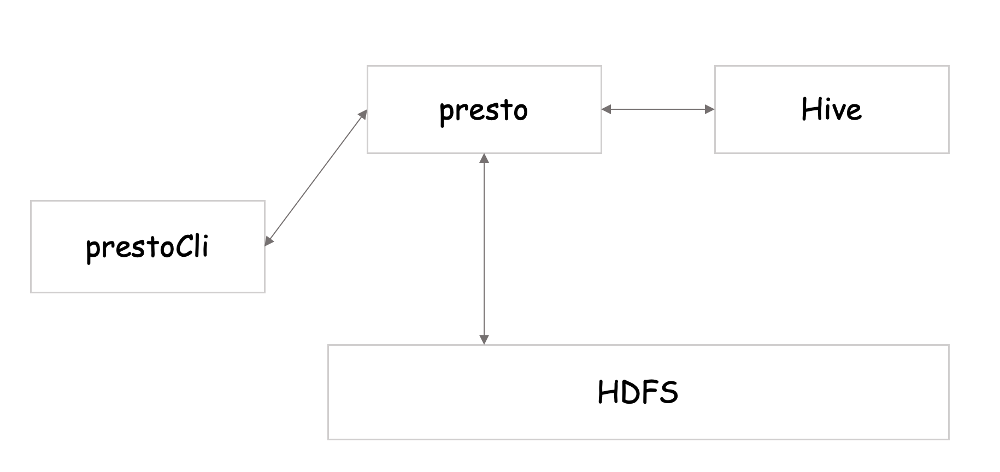
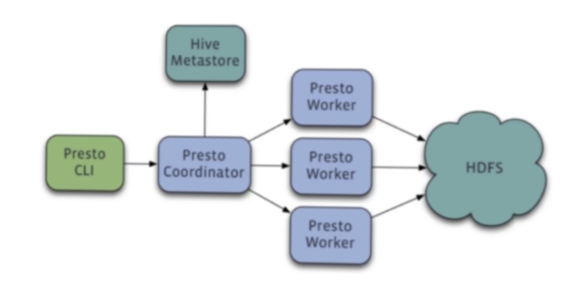
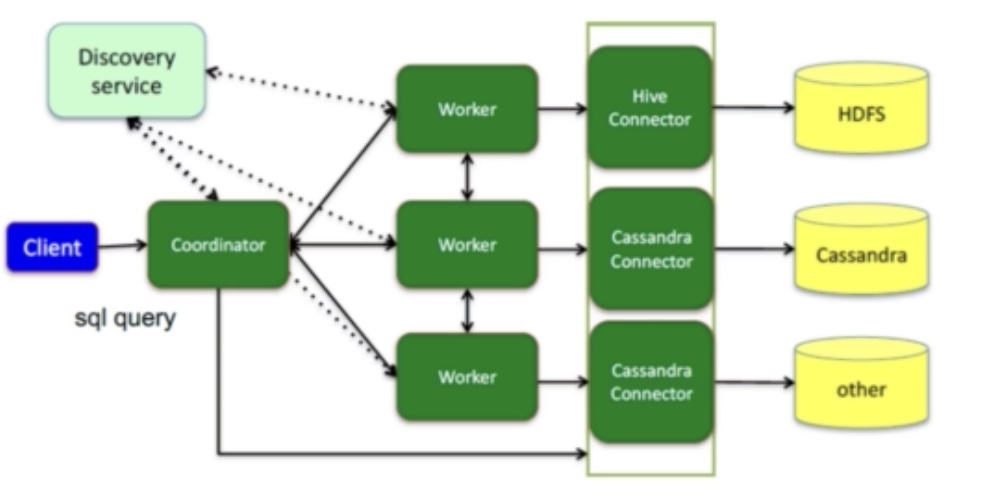

Hive是第一个基于Hadoop最常用的SQL处理引擎，也是日常数据查询最常用的方案。Hadoop集群，就是为了跑sql任务而生的技术体系。impala，presto则是facebook公司开源的，为了避免hive的缺点分布式查询引擎，可满足实时、快速交互式查询。此外，还有drill、spark sql和hawq等。
hive简介
数据仓库：将多个数据源的数据经过ETL处理之后，按照一定的主题集成起来提供决策支持和联机分析应用的结构化数据环境
ETL:Extract(抽取)、Transform(转换)、Load(加载)
loap 查询引擎：impala或presto
hive 基于hadoop hdfs上的文件进行查询，可以将hive转化成
Hive是将存储在HDFS上的数据映射成数据库和一张表，库和表的元数据信息一般存在关系型数据库。以MapReduce作为计算引擎，HDFS作为存储系统，提供超大数据集的计算/扩展能力
Hive数据存储：存储在HDFS上的，Hive的库和表是对HDFS上的数据的映射（元数据）。
Hive元数据存储：一般在外部关系库(MySQL)，元数据与Presto、Impala等共享
因为Hive查询比较慢，因此通常会用Presto、Impala等查询引擎进行查询；而我们只需要启动Hive MetaStore，提供元数据的检索服务，就可以用Presto进行集成。
Hive语句的执行过程：将Hive SQL(HQL)转换为MapReduce任务进行，也具有解释器、编译器，优化器等，HQL进行解析，生成计划，通过优化器生成最优计划，由MapReduce进行调用，得到最后的结果。MapReduce需要进行频繁的I/O读写，所以HIVE查询速度比较慢。
常见名词：
1.数据仓库
2.OLTP/OLAP
OLTP(联机事务处理)：是传统的关系型数据库的主要应用，主要是基本的、日常的事务处理，例如银行交易、增删改查等
OLAP(联机分析处理)：是数据仓库系统的主要应用，支持复杂的分析操作，侧重决策支持，并且提供直观易懂的查询结果
hive 内部表操作
1 | ssh root@39.101.206.5 |
hive的数据是存储在hdfs上的，hive文件支持的存储结构有四种:TEXTFILE、SEQUENCEFILE、ORC、PARQUET，前面两种是行式存储，后面两种是列式存储。这里以TEXTFILE为例。每一行就是hive表的一行，
假设数据存储于 testdata.txt 文件中：
1 | 1,tom,music-running-code,c++:98.0-java:76.00-php:65.0 |
1 | # 建表 |
1 | # hdfs |
text file格式：指定相关分隔符，就能形成hive array和map这两种复杂的格式。每一行对应hive的一行数据，每一行通过逗号分隔成列，每一列通过-分割collection(array类型)，通过:分割key-value(map类型)
hive 外部表操作
内部表会移动至我们配置的warehouse当中，load之后在hdfs的warehouse文件中，内部表会把数据移动到指定文件，删除以后也会把相关文件删除。相反，外部表只需要在建表加上extend关键字，删除时候只会删除hive源数据，并不会删除本身的文件。
1 | # 先将测试数据上传到hdfs上 |


1 | # 查看外部表数据 |
我们分别删除table1和table2，然后比较hdfs文件，就知道内部表和外部表的差别了。
1 | drop table table1; |
进入testtable下，查看是否有 testdata.txt文件1
2
3
4
5cd /usr/local/hadoop/bin
./hdfs dfs -ls /testtable
Found 1 items
-rw-r--r-- 1 root supergroup 133 2020-03-24 22:08 /testtable/testdata.txt
我们再看下warehouse下，是否存在table1(已经成为 )
1 | # table1（内部表）相应的数据文件已被删除 |
因此，当我们删除内部表时，数据文件也删除掉了。
presto简介
presto是由facebook开发的分布式SQL查询引擎，用来进行高速、实时的数据分析。presto的产生是为了解决hive的mapreduce模型太慢且不能通过bi等工具展现hdfs数据的问题。
preto是一个计算引擎，它不存储数据，通过丰富的connector获取第三方服务的数据，并支持扩展。例如：通过连接hive的metastore获取hive的元数据信息，从而读取hdfs上的数据；通过mysql的connector获取mysql数据，同时还支持注入hbase等connector，并且支持扩展，通过接口扩展。
presto的优点
- presto支持标准的sql，降低了分析人员和开发人员的使用门槛
- presto支持可插拔的connector，可以连接多种数据源。包括hive、rdbms、kafka、mongodb等。支持不同数据源的联合查询
- presto是一个低延时、高并发的内存计算引擎，比hive执行效率高得多
presto数据模型
catalog：即数据源。hive、mysql、mongdb、kafka都是数据源。presto可以连接多个hive和多个mysql
schema：类比于database，一个catalog下有多个schema
table：数据表，与我们常用的数据库表意义相同，一个schema下有多个数据表
1 | select * |
因为不是单一数据源，因此分为三级，catalog-schema-table
presto的安装
1 | # 下载SERVER |
presto 的配置
接下来需要对presto进行配置，一共4个文件，包括3个worker和一个Coordinator
coordinator节点
1 | vi config.properties |
参数解释：
coordinator：当前节点是presto的coordinator节点，false代表worker节点
node-scheduler.include-coordinator：该coordinator是否参与计算，为true时，既作为coordinator节点，也作为worker节点。
http-server.http.port:指定HTTP端口。Presto使用HTTP来与外部和内部进行交流
query.max-memory: 查询能用到的最大总内存
query.max-memory-per-node: 查询能用到的最大单结点内存
discovery-server.enabled: true代表内嵌到coordinator当中，而不是作为单独服务启动。Presto使用Discovery服务去找到集群中的所有结点。每个Presto实例在启动时都会在Discovery服务里注册。这样可以简化部署，不需要额外的服务，Presto的coordinator内置一个Discovery服务。也是使用HTTP端口
discovery.uri: Discovery服务的URI。将example.net:8080替换为coordinator的host和端口。这个URI不能以斜杠结尾，这个错误需特别注意，不然会报404错误。
node.properties
1 | vi node.properties |
解释：
node.environment: 环境名字，Presto集群中的结点的环境名字都必须是一样的
node.id: 唯一标识，每个结点的标识都必须是为一的。就算重启或升级Presto都必须还保持原来的标识。如果有多个worker，这里的id不能重复
node.data-dir: 数据存储目录，Presto用它来保存log和其他数据
jvm.config
1 | vi jvm.config |
log.properties
1 | vi log.properties |
添加catalog
1 | mkdir catalog |
将hive添加到catalog当中，便可以通过presto查询hive相关信息了。
1 | vi hive.properties |
解释：
connector.name：根据connector.name决定根据哪个connector连接该数据源，hive的connectorhive-hadoop2
hive.metastore.uri：需修改为hive-metastore服务所在的服务器及端口
hive.config.resources：需配置core-site.xml和hdfs-site.xml的路径
至此，presto就配置完成了。下面我们启动presto。
1 | cd ../../bin |
presto 客户端
1 | mv ~/download/presto-cli-0.233.1-executable.jar . |
此时已建立连接
presto架构
presto是一个典型的master-slave架构，由三部分组成：一个coordinator节点、一个discovery server节点和多个worker节点/
其中，
coordinator负责解析SQL语句，生成查询计划，分发任务到worker节点执行任务
discovery server负责维护coordinator和worker的关系，通常内嵌于coordinator节点。我们在上边部署时就将其内嵌于coordinator节点中
worker节点负责执行查询任务以及与hdfs进行交互读取数据

通过presto的client连接到presto server，presto可以从hive metastore获取到相应的元数据信息，然后从HDFS访问数据，然后将结果返回给client。
那么，coordinator和worker处于怎样的位置呢？

coordinator负责接收presto提交给它的sql，然后从hive的metastore生成它的元数据，将sql解析之后生成的查询计划分发给各个worker节点。各个worker节点去HDFS查询数据。最后，coordinator把worker节点进行汇总，返回给client字段。
presto是支持多个数据源的联合查询，那presto怎么实现多个数据源的查询呢？在架构当中是怎么体现的呢？

左半部分,worker访问数据源时候的connector，每个worker对应多个connector，每个worker可通过不同的connector从不同的数据源获取数据。最终将不同数据源的数据在内存中进行聚合计算，从而实现跨数据源的联合查询。
MPP架构
数据库架构设计
- Share Everthing：完全透明共享CPU/MEMORY/IO，并行处理能力是最差的，不易扩展，例如SQL SServer
- Shared Storage：各个处理单元使用自己的私有CPU和Memeroy，共享磁盘系统。数据共享，可通过节点提高并行的能力，但受到存储限制
- Shared Nothing：各个处理单元都有自己私有的CPU/内存/硬盘，不存在任何共享资源，并行能力和扩展能力都不受限制。例如hadoop
MPP架构就对应着Shared Nothing架构，就好像小数据库联合起来组成一个大数据库，将数据进行分片存储各个节点上。每个节点查询自己负责的数据，最终得到结果反馈。
MPP架构优缺点
易扩容：可轻松通过扩展机器节点（处理单元）扩展整个系统的分布式存储和计算能力
效率高：任务并行执行能力强，充分发挥本地计算的能力，数据无共享、无I/O冲突，无锁资源竞争，计算速度快
短板效应：单个节点查询效率慢会影响整个查询，所以如果每个节点配置相同会避免该问题
回到presto来说，presto拥有多个worker，每个worker都是独立的，拥有自己的CPU/MEMORY/IO。
Presto Connector & Functions
我们来看一个例子，来表明presto是如何处理的？
多个数据源，SQL进行解析，通过SQL生成的语法树，知道该SQL是多数据源的SQL查询语句。然后将SQL进行拆分，将SQL拆分为多个数据源的语句，（整个涉及多个优化细节，例如列分解、下推、函数执行等），将子查询推到对应的数据源进行查询，获取数据后在内存中进行处理，返回客户端。
Presto Connector
presto包含哪些connector呢？熟知的有hive、JMX、MySQL等，也包括Cassandra、ES、kafka、MongoDB、redis等。此外，presto还支持可扩展的自定义Connector。
Presto Functions
presto包含内置函数，包括聚合函数(SUM、max)，字符串，时间处理函数等简单的函数，也支持更高级的JSON、正则、Array、Map、Geo、Url及Lambda表达式等函数。此外，presto还支持可扩展的自定义函数。
python访问presto
pyhive方式
1 | pip install pyhive[presto] |
1 | from pyhive import presto |
sqlalchemy方式
1 | from sqlalchemy import * |